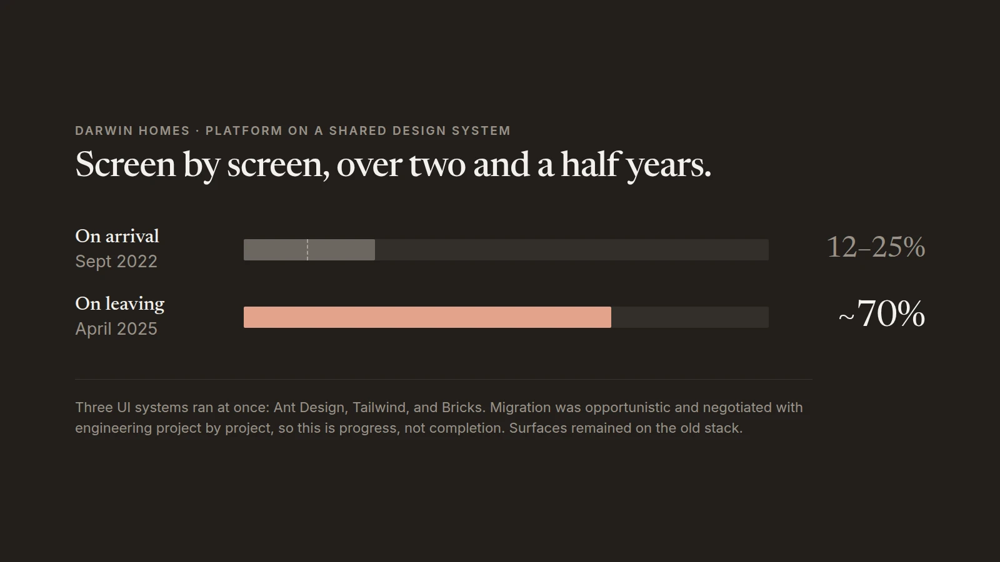

Outcomes
It did not finish. The migration was opportunistic by design, negotiated with the engineering lead project by project, and there were still surfaces on the old stack when I left in April 2025. Seventy percent is what I can defend, not a completion claim.

The problem, stated properly
I noticed the three systems on arrival. Ant Design, Tailwind, and Bricks, which was ours. That alone is survivable. The real problem was underneath it.
Most screens were custom one-offs. They had been built to resemble the system rather than assembled from it, so they did not share a common design language even where they looked like they did. Fonts and font sizes inside buttons varied. Button sizes, paddings, and weights varied. The entire point of a system is that you change something in one place and it cascades. Ours did not cascade. It just looked like it had.
Bricks had robust foundations and a thin component set that did not account for the interactions the platform actually needed, so I broke components and rebuilt them. One library we had started updating had never been pressure tested against responsiveness or the multi-select behavior we needed.
Doing the job before the title
I was running the design function for six to eight months of 2024 before I was made Head of Design. My manager had left, and the work did not stop.
Inside six months of 2023 the design team had gone from five to two. Three designers, including the head of design, left or were let go. For months after that, design reported to someone who did not understand it and would disagree with us on fundamentals or change the subject. What I did in that window was ordinary management without the authority for it: one to ones with the junior designer, advice, feedback, and cover. They wanted that, and nobody was going to provide it otherwise.
When leadership decided to add a designer, I built the interview process and the checks that went with it, then helped identify the candidate. A dynamic formed above us that positioned the two of us as rivals. I decided not to play it. I brought him into the filters research, gave him real ownership, and was straight with him when the dynamic became visible. We became close collaborators, and his respect came from watching me advocate for design and help him navigate the egos and the hierarchy rather than from anything I could claim on an org chart.
I was promoted to Head of Design with one condition attached: the team went back to two. The senior designer was let go without my involvement, in a round that cut or reduced many departments. By the time the title arrived I had one report. In hindsight the consolidation to a small core was always the plan, and design was not on the protected list.
How the migration actually worked
You cannot redesign everything at once, so you upgrade pages as the opportunity arises. Every migration was a negotiation with the engineering lead about appetite, attached to a project that was already funded.
The filters and saved views pattern was the biggest lift, and it did double duty. Standardizing how the platform finds its data also gave us the reason to touch the Ant Design screens, where the visible damage was concentrated in dropdowns and in how badly choice selection behaved. Tailwind surfaces looked closer to right, but the same problems showed up in the same places.
The test I used for whether a migration counted: when we implemented Bricks on a page, the whole page moved onto the system. Not a page custom mapped to look like the system. If it did not cascade afterward, it had not moved.
What I would tell you about it
The number I care about is 12 to 25 percent going to about 70. Not because 70 is good, but because it is the only number I have that measures the design function rather than a product. Every other figure I can give you about Darwin measures the business.
What I would do differently is catch it earlier. Three systems coexisted as long as they did because each squad was optimizing locally and nobody was accountable for the whole. Once I had the function, I treated inconsistency as a compounding debt instead of a housekeeping task, and that is the part I would start on day one rather than year two.